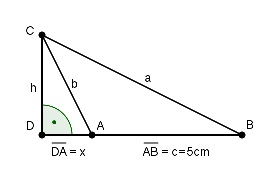

Pythagoras Aufgabe 29 Die Dreiecke ABC und DAC sollen flächengleich sein. Wie groß müssen a und b in cm sein, wenn c = 5 cm ist und jedes Dreieck eine Fläche A = 30 cm² hat?  Beide Dreiecke haben zusammen eine Fläche von 2 * 30 cm² = 60 cm². Für die Fläche des Dreiecks DAC gilt: h * x 30 = ------- | *2 2 60 = h * x | :x 60 h = ---- x Für die Fläche des Dreiecks DBC gilt: h * (x + 5) 60 = ------------- |*2 2 120 = h * (x + 5) |:x 120 h = ------- x + 5 Gleichgesetzt: 60 120 ----- = ------- x x * 5 Über Kreuz multipliziert 60(x + 5) = 120x 60x + 300 = 120x | -60x 300 = 60x | :60 x = 5 cm --> DB = 5 cm + 5 cm = 10 cm Eingesetzt in: 60 60 h = ----- = ----- = 12 cm x 5 Satz von Pythagoras im Dreieck DAC: b² = x² + h² b² = 5² + 12² = 169 |√ b = 13 cm Satz von Pythagoras im Dreieck DBC: a² = DB² + h² a² = 10² + 12² = 244 |√ a = 15,6 cm